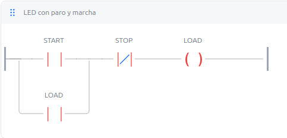
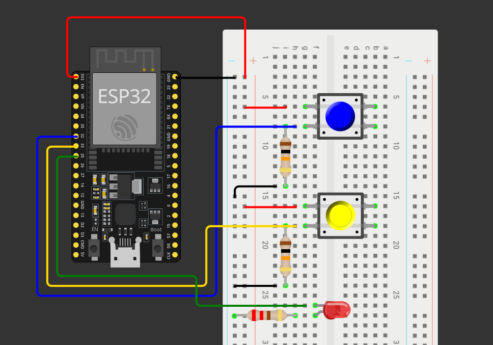
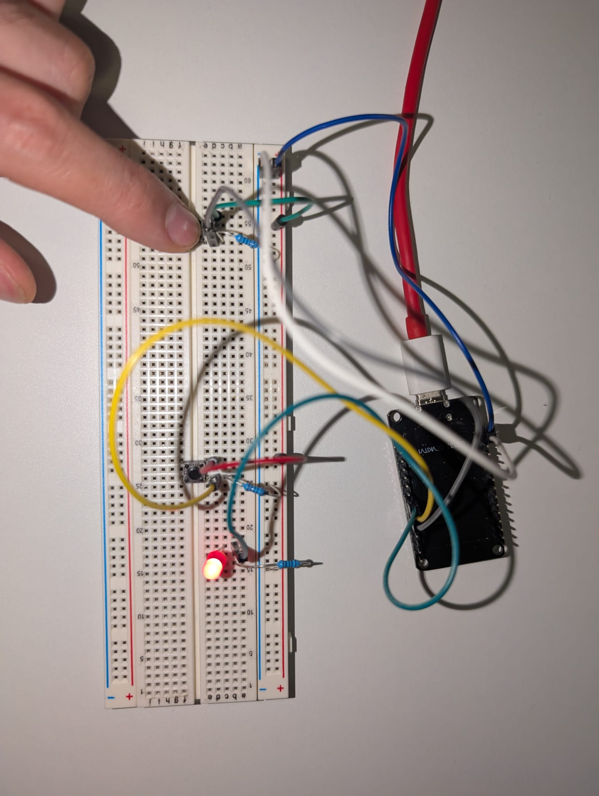
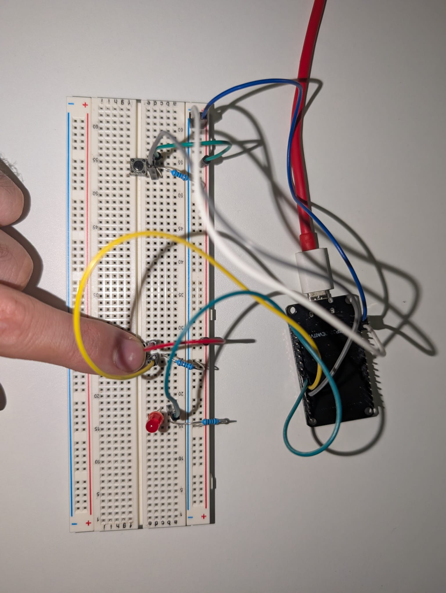

Camino a la GICSP — Cap. 2: Diseñando el circuito
¡Aviso! - Este es el capítulo 2 de una serie de blogs en los que explico cómo construí un laboratorio de automatización industrial con un esp32. Si no has leído el primero te lo dejo aquí: Camino a la GICSP - Cap. 1
En el capítulo anterior expliqué cómo convertí un ESP32 en un PLC funcional y programado, mediante el software OpenPLC, con un simple programa en lenguaje Ladder que consistía en encender y apagar un led.
El objetivo de estos laboratorios no es tanto el aprender un lenguaje de programación PLC, sino comprender los protocolos que hacen funcionar ICS -cómo se comunican los PLCs con unidades centrales, cómo se conectan a la red, cómo operan protocolos de comunicación como modbus TCP y Profinet-, aun así, durante el transcurso de estos laboratorios también programaré tanto en Ladder como en IL (Instruction Language), dos de los más importantes lenguajes contemplados en el estándar IEC 61131-3.
Pero ahora vamos al grano, en este capítulo abordaré la etapa del diseño de circuito y el posterior cableado. Será un capítulo mucho más breve que el anterior, pero tal vez más entretenido.
Bien, hasta ahora teníamos un programa en ladder que consistía en un botón de marcha, otro de paro y un led que se encendía y apagaba en función de estos dos.

El circuito va a consistir en dos pulsadores, un led y 2 resistencias Pull Down para los pulsadores.

Este circuito es muy sencillo: conecté el GND y la salida de 3.3V al negativo y positivo de la breadboard respectivamente.
Los 3.3V van directamente a las patillas de ambos pulsadores.
Después, de las entradas digitales 32 y 33 salen los cables que van directamente a las patillas restantes de los pulsadores, y de esas mismas patillas salen dos resistencias Pull Down.
>> Una resistencia de pull-down es una resistencia que conecta un pin digital a GND (tierra), y su función es asegurar que, en ausencia de una señal activa, el pin quede en un estado LOW (0V) definido en lugar de quedar flotante. Sin ella, el pin podría captar interferencias electromagnéticas del entorno y leer valores erráticos o indeterminados. De esta forma, se garantiza que la señal sea siempre un 0 o un 1 lógico claro y estable, nunca un estado ambiguo.
Finalmente, del pin 25 sale un cable directamente al positivo del led -ánodo en este caso- y del cátodo sale una resistencia directamente a GND.
Bien, hecho el diseño, vamos a calcular los valores de resistencia que necesitamos.
Teniendo en cuenta que vamos a utilizar un led rojo y que su tensión de funcionamiento es aproximadamente 2V y que necesita unos 0.02A para funcionar:
$$R = \frac{V_{fuente} - V_{led}}{I}$$
$$R = \frac{3.3 - 2}{0.02}$$
$$R = {65}\Omega$$
Entonces tenemos que la resistencia que vamos a utilizar para el led debe ser, como mínimo, de 65 Ohms. Como no tengo resistencias tan bajas, pondremos una de 100 Ohms.
En cuanto a las resistencias Pull Down, cuando se trata de electrónica de tan baja tensión se suelen utilizar las de 10 KOhms.
Por lo tanto, nuestra lista de la compra queda así:
- Resistencia 100 Ohms
- 2 Resistencias 10 KOhms
- Led Rojo
- 2 Pulsadores
Una vez diseñado el circuito, me puse manos a la obra y comencé a cablear en la breadboard y a testear que todo funcionara correctamente.


Y hasta aquí el capítulo 2, en la próxima contaré cómo conecté este circuito a la red utilizando la placa wifi del esp32 y cómo, mediante modbus TCP, controlé el sistema remotamente. También sniffearemos la red para comprender cómo funciona dicho protocolo por detrás con Wireshark.
¡Espero que os haya gustado y nos vemos a la próxima!
EnRoot